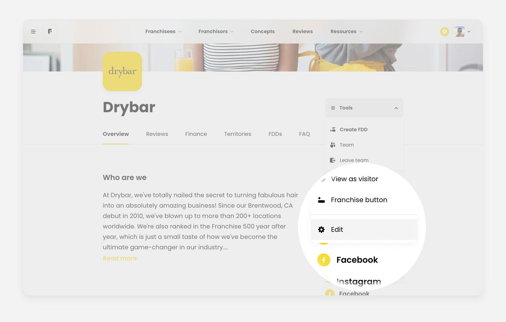
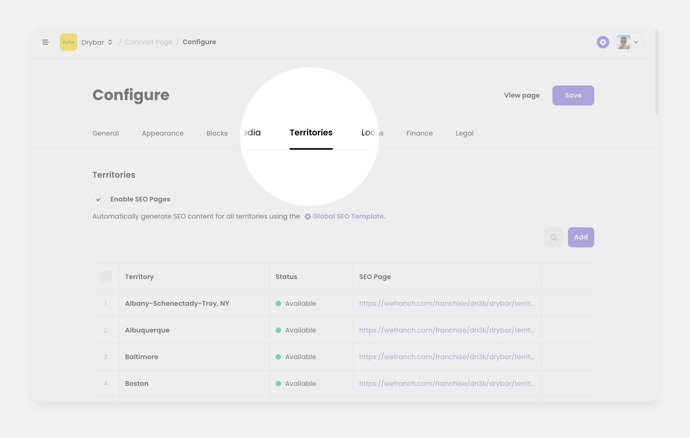
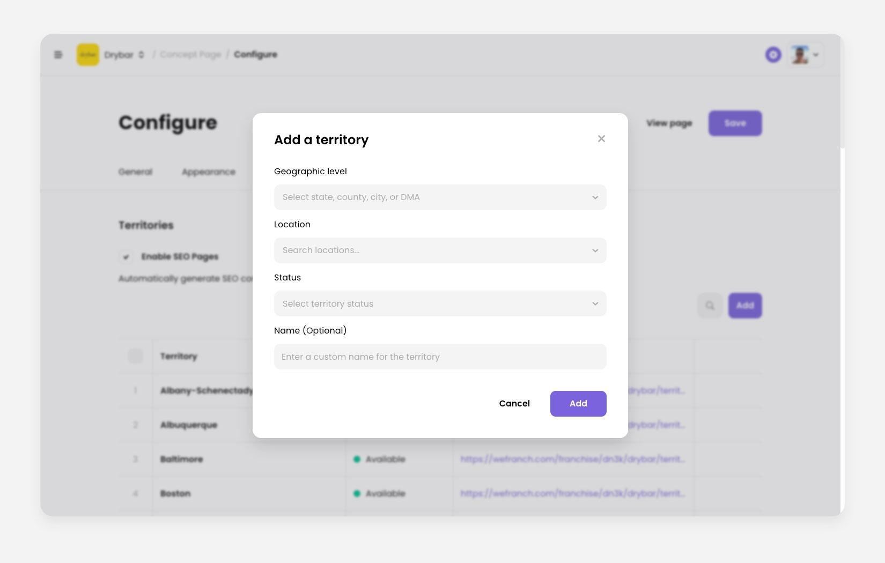
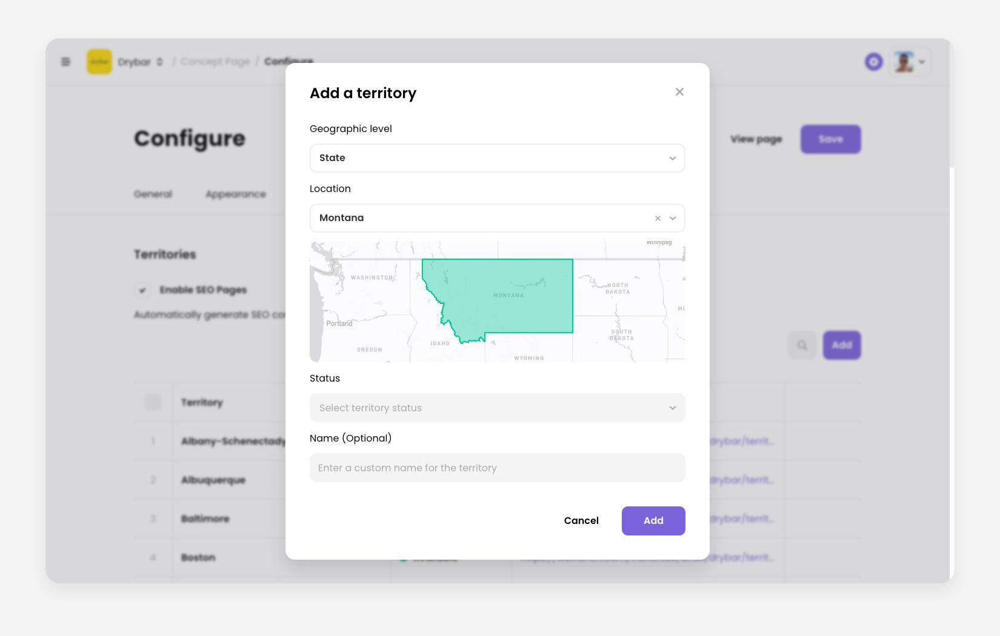
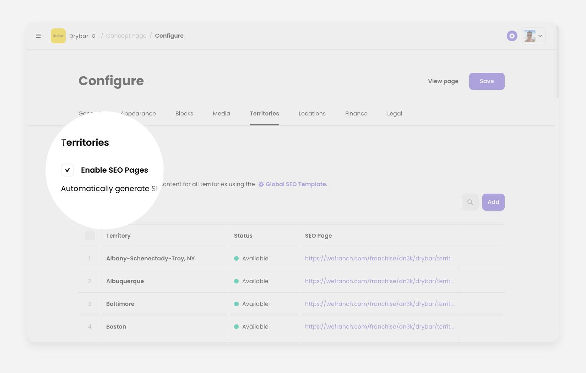
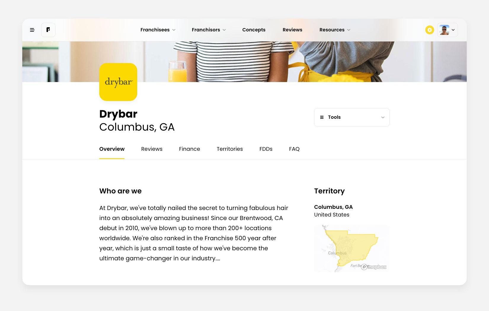

How to add territories to a concept page
Updated
Open Configure
Open your franchise concept page. You need to be signed in to an account with admin access to the edit page.
- Find the Tools dropdown to the right of the brand name.
- Open Tools and choose Edit to reach Configure Franchise Concept.
You can also open Configure from the dashboard. Use the Tools dropdown on that concept's actions row.

Open the Territories tab
In Configure, open the Territories tab in the horizontal menu.

Add a territory
On the Territories tab, click Add at the top right of the table. That opens the Add a territory dialog.

In the dialog you can:
- Choose a geographic level, such as State, CBSA, County, City, or DMA.
- Mark the territory Available, Sold, or For Sale.
- Enter a custom territory name.
The Location has to match the Geographic level. If you type “Montana” and the level is DMA, it will not match.

Turn on SEO pages
If you Enable SEO Pages, Wefranch creates a separate SEO page for each territory.

Someone searching for a category in a city, such as Health & Beauty in Columbus, can then land on an SEO page for that territory.

Need help
Email mariyam@wefranch.com.